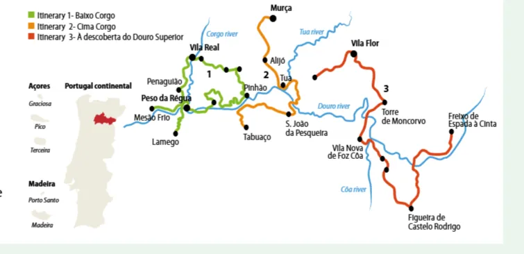
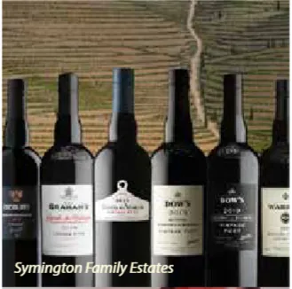

Kapitel 4 · Die portugiesischen Weinregionen
Weinregion Douro und Porto
Kennzahlen (2022)
Rebfläche: 43.466 ha
Gesamterzeugung: 145.708.300 Liter
Geschichte
Die Anfänge des Weinbaus dürften in der Kupfersteinzeit liegen; die frühesten Belege aus archäologischen Ausgrabungen sind jedoch römische Weinpressen mit festem Deckel, Pressgewichten und zwei gekreuzten Achsen (Foz Côa, Murça, Meda usw.). Der Douro ist die Region mit den frühesten in der Neuzeit festgelegten Weinbaugrenzen. 1756 bestimmte der Marquis von Pombal die Grenzen der Weinbaugebiete des Douro, die sich bis heute praktisch nicht verändert haben, auch wenn sie inzwischen geografisch in drei Regionen unterteilt sind: Baixo Corgo, Cima Corgo und Douro Superior. Der Portwein hatte schon im 15. Jahrhundert durch das englische Handelsinteresse erheblichen Aufschwung genommen. Das Erfolgsgeheimnis war eine strenge Kontrolle durch eine Art „besondere Aufsicht“, die Qualität sichern und Betrug verhindern sollte. Mit einem Anreizsystem regelte diese Aufsicht die Anpassung der Erzeugungsquoten an die Marktnachfrage. Grundlage waren Analyse und Bewertung verschiedener Erzeugungskriterien (Lage des Weinbergs, Hangneigung, Mikroklima, Sorten, Bodentyp, sechs verschiedene Ertragsklassen usw.), um das Interesse der Erzeuger an einer differenzierten Bewertung ihrer Weinberge und Weine zu wecken. Mit dem jüngsten deutlichen Ansehensgewinn des Weins ließ sich die Politik über das Instituto dos Vinhos do Douro e do Porto, I.P. (Institut für Douro- und Portwein) koordinieren. Die Universidade de Trás-os-Montes e Alto Douro, der Verband ADVID und weitere Organisationen bildeten die Grundlage für ein dauerhaftes gemeinsames Handeln auf hohem wissenschaftlichem Niveau.


Terroir
Klima nach Köppen-Geiger:
Csa. Feuchtgemäßigtes Klima mit sommerlicher Trockenzeit.
Indizes des MCC-Systems (Tonietto & Carbonneau, 2004): heliothermischer Index (HI): +2, Kühle-Nacht-Index (CI): +1, Trockenheitsindex (DI): +1. Die Vielfalt der Mikro- und Topoklimate ist extrem. Spätfröste sind selten; im Sommer besteht die Gefahr von Starkregen und Hagel. Das Klima wird vom gebirgigen Gelände bestimmt. Sonnenzugewandte und sonnenabgewandte Hänge haben unterschiedliche Klimawerte. Daraus ergeben sich zwei verschiedene Weintypen: Portwein (Likörwein) und DOC-Douro-Wein. Die Berge, die den Douro vom Vinho Verde trennen, heben den Einfluss der Meereswinde auf und schaffen ein besonderes Klima: warm, aber mit kalten Nächten und mäßiger Trockenheit. Die Klimabedingungen sind typisch mediterran und variieren je nach Lage des Weinbergs an den Hängen von Flüssen und Bächen.
Niederschlag: > 600 mm
Geologie: Wegen seiner eindrucksvollen geologischen Struktur in Verbindung mit dem menschlichen Rebbau wurde die Region der Täler des Alto Douro von der UNESCO zum Welterbe erklärt. Kennzeichnend sind steile Hänge, oft über 30°, und steil abfallende Täler, oft über 200 Meter tief. Im Norden prägt eine Fläche das Relief, die bei 900–1.200 Metern gipfelt. Die Gesteinszusammensetzung wechselt mit der geologischen Struktur: Gneise, Granite, Quarzite, Massive, Schiefer, durchsetzt mit Grauwacken-Schiefer und fluviomarinen Zonen. Die Region gliedert sich in drei natürlich verschiedene Unterregionen (Baixo Corgo, Cima Corgo und Douro Superior), nicht nur aus klimatischen, sondern auch aus sozioökonomischen Gründen, nach der wirtschaftlichen Nutzung der natürlichen Ressourcen und den dort betriebenen Tätigkeiten. Früher war der Rebbau nur im Alto Douro verbreitet, dem Gebiet der heutigen Unterregionen Baixo Corgo und Cima Corgo.
Niederschlag: zwischen 1.200 mm (Fontes) und 380 mm (Barca d’Alva); die Niederschlagsmenge nimmt von Barqueiros bis zur spanischen Grenze ab.
Bodenkunde: Der Douro beruht auf verschiedenen Arten metamorpher Schiefer. Granit kommt selten vor, und wo er auftritt, gelten die Böden als zu minderwertig für den bei der Portweinerzeugung üblichen „Anreiz“. Böden, auf denen der menschliche Einfluss sehr ausgeprägt ist, entstanden durch tiefe Bodenbearbeitung mit erzwungenem Aufbrechen des Gesteins, was das Profil vertiefte und die ursprüngliche Morphologie veränderte. Hier besteht das Profil aus einem Ap-Horizont (anthropogen), dessen Mächtigkeit von der Tiefe der Lockerung (1,00 m bis 1,30 m) und der Lage der Terrasse abhängt, meist recht steinig, gefolgt vom Gestein (R); meist ist der Ap-Horizont in zwei Schichten unterteilt: die oberen 25 cm aus der jährlichen Bodenbearbeitung im Weinberg und darunter die zweite bis zum Gestein. Eine weitere Gruppe bilden: Leptosole – Böden, deren Hauptmerkmal hartes Gestein in weniger als 30 cm Tiefe ist, in drei Untereinheiten: dystrisch-lithisch (sauer), umbrisch (sauer und reich an organischer Substanz, in höheren Lagen) und in geringerem Maß eutrisch (schwach sauer). Cambisole – Böden mächtiger als 30 cm. Fluvisole – Böden aus jungen Schwemmablagerungen auf Sedimentationsflächen; sie nehmen nur eine kleine Fläche ein. Die sauren pH-Werte der meisten Böden (außer im Douro Superior) und die steil geneigten Weinberge erfordern menschliches Eingreifen für eine ordnungsgemäße Bewirtschaftung. Das Wasserangebot in Verbindung mit den übrigen Boden- und Klimabedingungen setzt die Rebe unter ständigen Stress und sichert so die Qualität der Weine der Region. Die Weinberge liegen auf 70 bis 700 Metern Höhe mit unterschiedlichen Expositionen, die die Sortenwahl bestimmen.
Erzeugte Weintypen
DO-Portwein (VLQPRD): Weiß und Rot in verschiedenen Stilen: Ruby, Tawny, White, Vintage, LBV, Jahrgang (Colheita), mit Altersangabe (10/20/30/40 Jahre) und Reserva.
IG-Wein Duriense bzw. Landwein Duriense: Rot, Weiß, Rosé.
DO-Douro-Weine (VQPRD): Rot, Weiß, Rosé.
DO-Douro-Schaumweine (VEQPRD)
DO-Douro-Likörweine (VLQPRD) „Moscatel do Douro“
Aguardente de Vinho (Weinbrand). Das Instituto dos Vinhos do Douro e do Porto, I.P. – IVDP ist die Zertifizierungsstelle für DO- und IG-Erzeugnisse dieser Region.
Regionale Kontakte
Technische Informationen: IVDP, I.P. – Instituto dos Vinhos do Douro e do Porto, I.P., Rua dos Camilos 90, 5050-272 Peso da Régua, Tel.: 254 320 130, Fax: 254 320 149
Website: www.ivdp.pt, E-Mail: ivdp@ivdp.pt
Kulturelle Informationen zum Wein der Region: Confraria Enófila do Vinho do Porto (Bruderschaft der Portweinfreunde), Rua Dr. António Granjo 207, 4400-124 Vila Nova de Gaia, Tel. 223 745 525, Website: confrariavinhodoporto.com.
Hochschulen und Weinbauforschung: Universidade de Trás-os-Montes e Alto Douro (UTAD), Quinta dos Prados, 5000-262 Vila Real, Tel.: 259 350 000, www.utad.pt; Escola Superior Agrária de Bragança (Polytechnisches Institut Bragança – Landwirtschaftsschule), Campus de Santa Apolónia – Apartado 1172, 5301-855 Bragança;
Telefon: (+351) 273 303 200, http://esa.ipb.pt; Confraria dos Enófilos da Região Demarcada do Douro (Bruderschaft der Weinfreunde des Douro-Anbaugebiets), Praça Renato Aguiar, Edif. S. Tomé, r/c esq., 5050-243 Peso da Régua, Tel.: 254 321 323
Zertifizierungsstelle: IVDP, I.P. – Instituto dos Vinhos do Douro e do Porto, I.P., Rua dos Camilos 90, 5050-272 Peso da Régua, Tel.: 254 320 130, Fax: 254 320 149
Website: www.ivdp.pt, E-Mail: ivdp@ivdp.pt; Porto, Rua Ferreira Borges 27, 4050-253 Porto
Tel.: +351 222 071 600
Weintourismus:
Portweinrouten, Largo da Estação, 5050-237 Peso da Régua, Tel. 254 324 774, www.rvp.pt
Informationen zu Erzeugern und Abfüllern:
http://www.ivv.min-agricultura.pt/np4/1736.html, Jahrbuch 2011, S. 130–140.
Website der Weinroute: www.rvp.pt
Bezeichnung:
IGP Duriense (Landwein)
Rechtsgrundlage: Decreto-Lei 212/2004, Decreto-Lei Nr. 173/2009; VO (EG) 1234/2003 (gilt für alle unten genannten Sorten).
Für IGP Duriense zugelassene Sorten
Rechtsgrundlage: Gesetzesdekret Nr. 173/2009 vom 3. August, Ministerialerlass Nr. 383/2017 vom 20. Dezember und Gesetzesdekret Nr. 212/2004 vom 23. August.
Rotweine: Alfrocheiro (Tinta Bastardinha), Alicante Bouschet, Alvarelhão (Brancelho), Alvarelhão Ceitão, Aramon, Baga, Barreto, Bastardo, Carignan, Casculho, Castelã, Castelão, Cidadelhe, Cinsault, Concieira, Cornifesto, Donzelinho Tinto, Engomada, Espadeiro, Gonçalo Pires, Grand Noir, Grangeal, Jaen (Mencía), Lourela, Malandra, Malvasia Preta, Marufo, Melra, Mondet, Moreto, Mourisco de Semente, Nevoeira, Patorra, Petit Bouschet, Pinot Noir, Português Azul (Blauer Portugieser), Preto Marinho, Roseira, Rufete (Tinta Pinheira), Santareno, Sevilhão, Sousão (Vinhão), Tinta Aguiar, Tinta Amarela (Trincadeira, Trincadeira Preta), Tinta Barroca, Tinta Caiada (Pau Ferro, Tinta Lameira), Tinta Carvalha, Tinta da Barca, Tinta Fontes, Tinta Francisca, Tinta Grossa (Carrega Tinto), Tinta Martins, Tinta Mesquita, Tinta Penajoia, Tinta Pereira, Tinta Pomar, Tinta Roriz (Aragonez, Tempranillo), Tinta Tabuaço, Tinto Cão, Tinto Sem Nome, Touriga Fêmea, Touriga Franca, Touriga Nacional, Valdosa und Varejoa.
Weißweine: Alvarinho, Arinto (Pedernã), Arinto do Douro (Dorinto), Avesso, Batoca (Alvaraça), Bical (Borrado das Moscas), Branco Especial, Branco Gouvães (Alvarelhão Branco), Branco Guimarães, Branco Valente, Caramela, Carrega Branco, Cercial, Chardonnay, Chasselas, Côdega (Roupeiro, Síria), Côdega do Larinho, Diagalves, Donzelinho Branco, Encruzado, Estreito Macio, Fernão Pires (Maria Gomes), Folgasão, Dona Branca (Folha de Figueira), Gouveio, Gouveio Estimado, Gouveio Real, Jampal, Malvasia Fina, Malvasia Parda (Farinheira), Malvasia Rei, Moscadet, Moscatel Galego Branco, Mourisco Branco, Pé Comprido, Pinot Blanc, Praça, Rabigato, Rabigato Moreno, Rabo de Ovelha, Ratinho, Samarrinho (Budelho), Sarigo, Semillon, Sercial (Esgana Cão), Tamarez (Molinha), Verdelho, Verdial Branco, Viosinho und Vital (Malvasia Corada).
Renommierte Weingüter
in der Region:
Wirtschaftlich und politisch am wichtigsten ist das Netz der Weinunternehmen in der Douro-Region. Wegen der Vielzahl der Akteure sind hier nur einige Beispiele genannt.
Wichtige Weingüter: Zu den bekannten DOC-Douro-Weingütern gehören die Quinta da Leda der Casa Ferreirinha (Sogrape), die Quinta D. Maria und die Quinta do Portal.


Renommierte Weinkellereien der Region:
Sogrape ist Portugals größte Weingruppe (Familie Guedes) mit Geschäftsinteressen im Ausland. Heute erzeugt sie Wein in den wichtigsten Weinbauregionen des Landes und im Ausland, nämlich in Argentinien, Chile, Neuseeland und Spanien, mit 1.600 Hektar Weinbergen, 19 Kellereien und 25 Weingütern. Weltweit verkauft Sogrape mehr als 150 Flaschen pro Minute. Ihre Marke Mateus Rosé (>20 Millionen Flaschen) ist einer der meistverkauften Weine der Welt.
Symington Family Estates ist einer der weltweit bedeutendsten Erzeuger von Premium-Portwein, der führende Weinbergsbesitzer im Douro-Tal und einer der größten portugiesischen Weinerzeuger. Zu ihr gehören bekannte Porthäuser: Graham’s, Dow’s, Warre’s und Cockburn’s. Sie besitzt 26 Güter im Douro-Tal mit insgesamt 2.255 ha, davon 1.024 ha Rebfläche. Zu ihren bekannteren Weingütern zählen die Quinta do Bomfim, Quinta dos Malvedos, Quinta da Cavadinha, Quinta do Vesúvio, Quinta Roriz, Quinta do Ataíde und Quinta dos Canais.
Real Companhia Velha: Das Unternehmen wird von der Familie Silva Reis geführt und besitzt fünf Quintas im Douro-Tal. Quinta and Vineyard Bottlers Vinhos S.A., Sogevinus Fine Wines, S.A.
Sociedade dos Vinhos Borges, S.A., Adriano Ramos Pinto – Vinhos, S.A.
Die Douro Boys: So nennen sich fünf befreundete Winzer, Besitzer der Weingüter Quinta Vale D. Maria (Van Zeller and Co.), Quinta do Vallado, Quinta do Crasto, Quinta do Vale Meão und Niepoort.